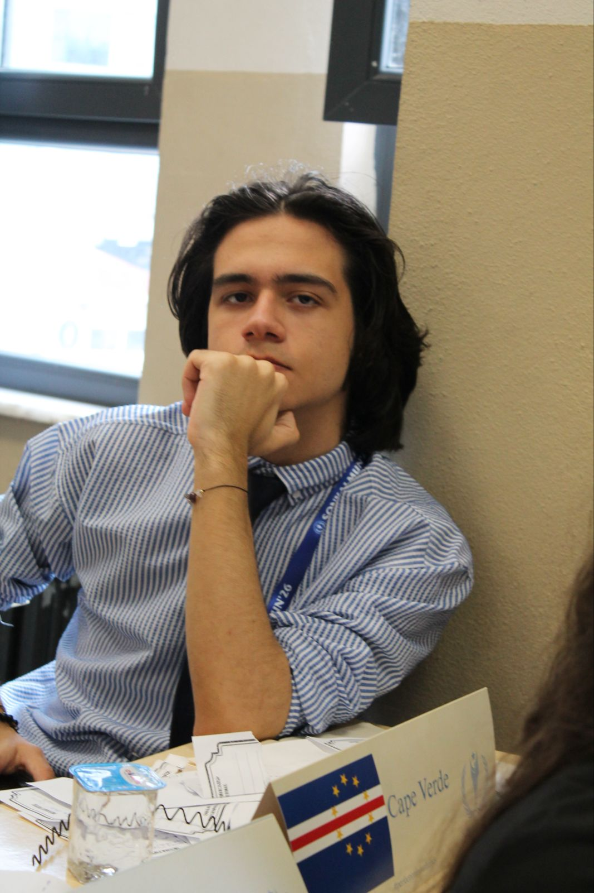

Ben Kimim?
Ben
Enes Çiçek
.
OMEGA
'nın kurucusu, International Physics Competition (IPhyC) Kocaeli yerel temsilcisi ve lise öğrencisiyim. Fizik, uzay, teknoloji ve oyun tasarımıyla ilgileniyorum.
IPhyC Profilim
Başarılar
International Physics Competition 2025 Bronze Honour Certificate
Katılınılan Etkinlikler
TEKNOFEST 2026 Savaşan İHA Yarışması
TÜBİTAK 2204A Proje Yarışması (2025, 2026)
TÜBİTAK 4006 Bilim Fuarları Destekleme Programı (2026)
International Physics Competition (IPhyC) (2025)
Global Quantum Mechanics Challenge (GQMC) (2026)
International Astronomy and Astrophysics Competition (IAAC) (2026)
Gebze Teknik Üniversitesi Yaz Stajı-Fizik (2026)
TÜBİTAK 2202 Bilim Olimpiyatları (2025, 2026)
Hedefler
Oxford Üniversitesi St. John's College fizik bölümünden mezun olmak
Kuantum kozmolojisi ve teorik fizik alanlarında doktora ve araştırmalar yapmak
CERN'de parçacık fiziği çalışmalarına katkıda bulunmak
Kendi araştırma laboratuvarımı ve kendi holding şirketimi kurmak
2050 yılına kadar dünyada nöroteknoloji sektörünü canlandırmak
Eğitim
Şehit Öğretmen Necmeddin Kuyucu Anadolu Lisesi (2024-2028)
Reysaş Lojistik Ortaokulu (2019-2024)
Öğretmen Şevket Özay İlkokulu (2015-2019)
Yetenekler
İleri Seviye HTML ve CSS Bilgisi
Lisans Seviyesi Fizik bilgisi
Lisans Seviyesi Matematik bilgisi
Orta seviye Python Bilgisi (Albumentation, OpenCV, YOLO Kütüphaneleri)
Başlangıç Seviye C# Bilgisi (Unity Engine Kütüphanesi)
Vibe Coding Bilgisi
Yapay Zekayı Verimli Kullanabilme
CEFR B1 Seviyesi İngilizce
Takım Çalışması ve Liderlik becerileri
İleri Seviye Gastronomi Bilgisi ve Aşçılık Becerileri
Hobiler
Yeni Yemek Tarifleri Üzerinde Çalışmak
Basketbol Oynamak
Resim Çizmek
Video Oyunları Oynamak
Müzik Dinlemek
Fiziksel Niceliklerin Boyut Analizlerini Yapmak
Uzay ve Astronomi ile İlgili Belgeseller İzlemek
Bilim ve Teknoloji Haberlerini Takip Etmek
Oyun Tasarımı ve Programlama